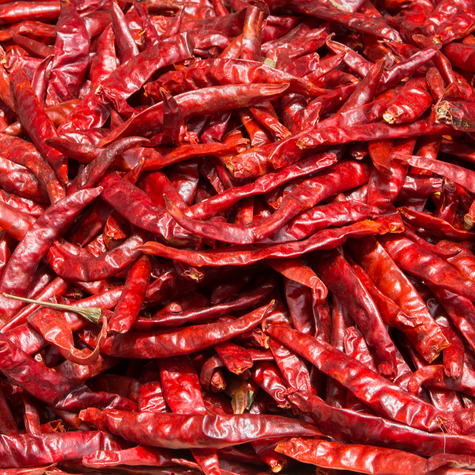
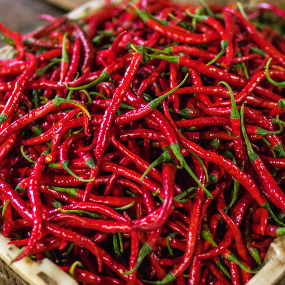
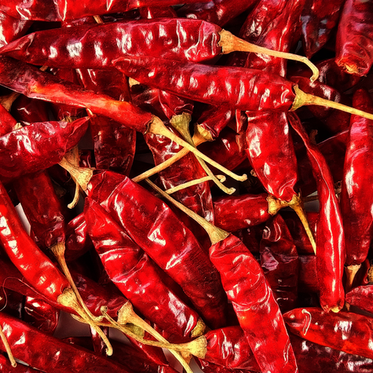

Red Chilli
Red chilli is a popular spice known for its hot and pungent flavor, widely used in cuisines around the world to add heat and color to dishes. It is made from dried and ground red chilli peppers, which contain capsaicin, the compound responsible for their spiciness. Red chilli comes in various forms such as whole, crushed, or powdered, and its intensity can range from mild to extremely hot, depending on the variety. In addition to enhancing taste, red chilli can boost metabolism, improve digestion, and is rich in antioxidants like vitamin C and beta-carotene.


